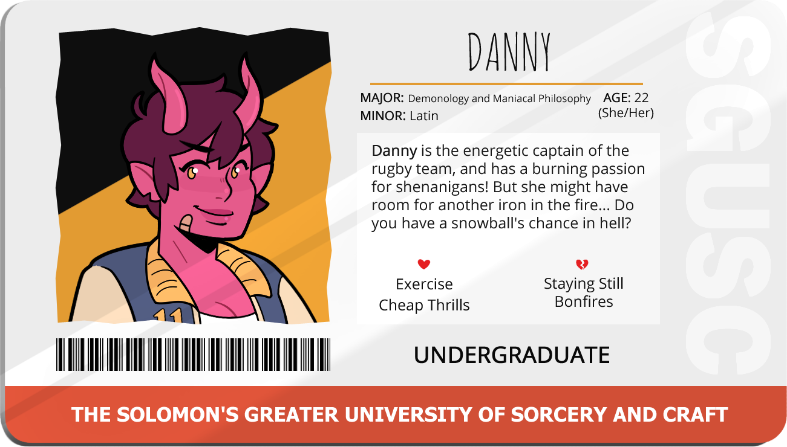
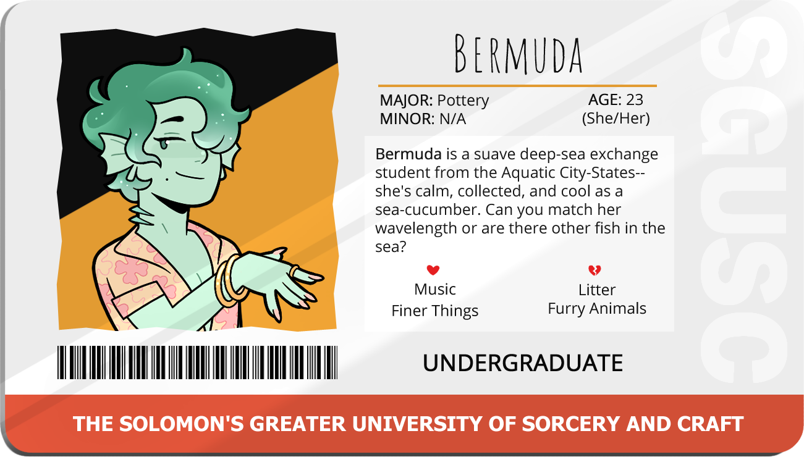

I said something strong would be nice!
"Blood in the Water" (Blood Orange Liquor, Red Zinfandevil, Sweet VerBOOth)
Oh? Curious, then where did you learn to make this?
"Oh, you know... places... from... people!"
So, you learn to do something else!
"I don't know anymore..."
Lost Keys
Check the very "normal" looking plant on the bookshelf.
Have you had any luck? Please say you found them...
"Again, luck had nothing to do with it!"
She sighs, trying to regain her train of thought.
"You already have!"
Quite a beauty, isn't she? My own little Black Shadow!
"Theo, she's gorgeous!!!"

Oh no! What do I do?!
"RUN!"
Pretty straight forward right?
"NO!"
A Fire and Brimstone! I didn't even know we had the stuff for it! How'd you know this was my all time fave?!
"Fire and Brimstone" (AbSINthe, Fyreball, Helltzer Seltzer)
Favorite Drink
This choice only appears if you brought Danny a Fire and Brimstone when she asked for a drink.
Any option, this choice does not affect your standing with Danny.
Can't keep them waiting can we?! Ready to play?
"I-I think the real question you should be asking is; if our opponents are ready....TO BE BEATEN?!"
Stake, paper, scissors!
This is a timed choice..
"Stake!"
A guess? Well, okay... let me think...
"Liminal Architecture?"
Lost Scare-pods
Check the rug.
Ya had any luck?
"Luck has nothing to do with it! Magic is real, but luck is fake!"
No, it's okay!
"Isn't opening up to strangers at parties, par for the course?"
Do ya ever feel like no one sees how hard you're tryin'?
"The point is that it's something you want to do!"

With all of the courage I can muster, I walk over and try to get her attention!
"A-are you in charge of the music?"
Soooooo...
"I take it you must be a Prophetic Analysis major?"
Favorite Drink
"The Dead Sea" (Water, Sea Salt, Ice)
Ah...well?
(Note: This choice only occurs if you bring Bermuda a Dead Sea when she asks for a dink.)
"Well, if it told you it wouldn't be a secret!" ???
Oh! Let me guess, I'm like...
"Professor Bloomlight's TA?"
Sometimes you need to be your own cheerleader-- your own advocate.
"Are you looking for applications?"
Aaah!!! Ok!
Note: This choice only shows up if you selected "Are you looking for applications?" on the last choice.
Any choice: this choice does not matter.
Bermuda's eyes shoot up to me, her brows furrowed into an intense expression.
"Oh! Uh, I'm sorry, should I go?"
Lost Ghuul
Check the tree by the kitchen.
You really saved my tail!
"I usually don't use my super secret finding powers...but I've been known to make exceptions for cute pottery majors...!"